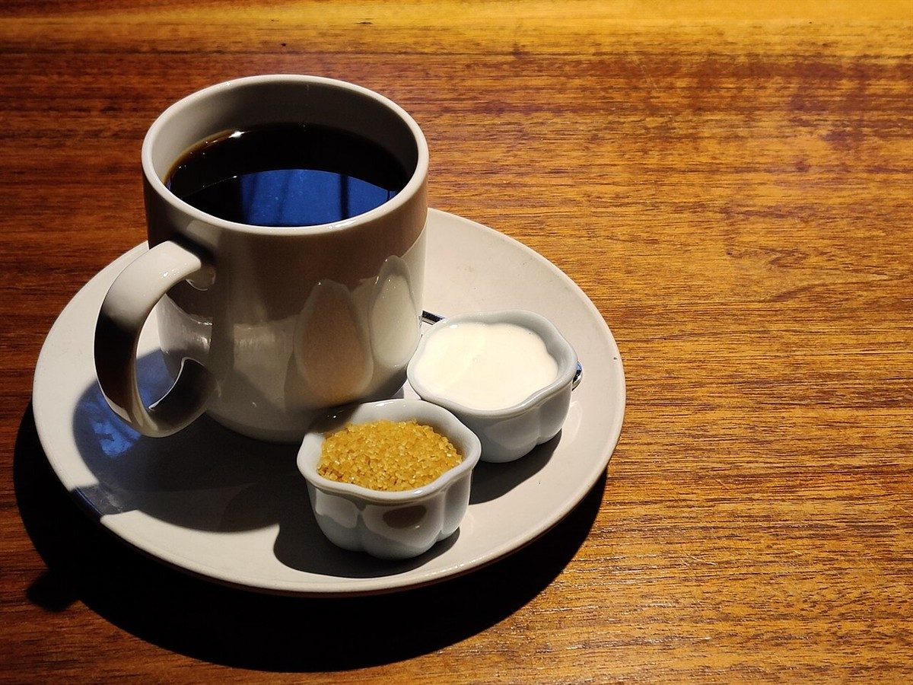
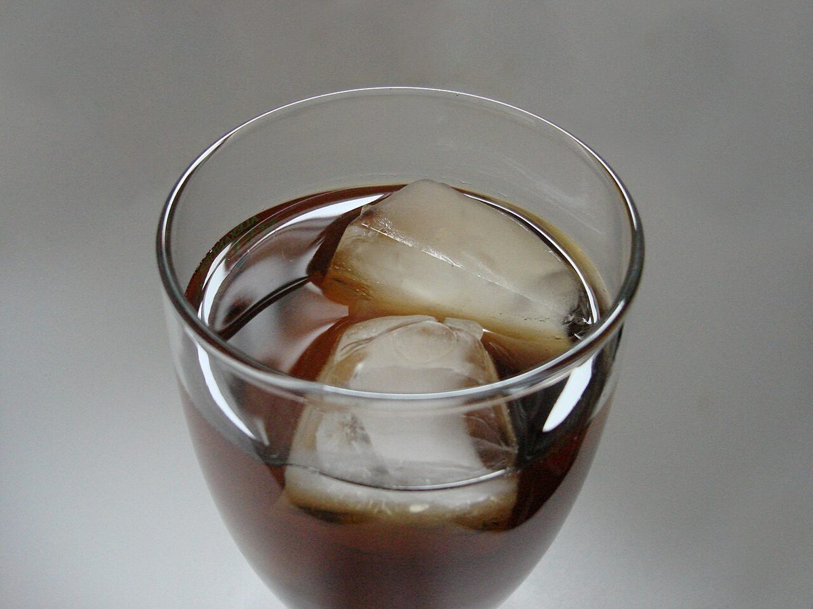

CAFE / 岡山県倉敷市
HARUNI
岡山県倉敷市新田にあるカフェ「HARUNI」のご案内ページです。営業時間やメニューなど詳しいことは準備中。まずはInstagramをのぞいてみてください。
制作側の連想
ミルクが先か、あとか。
Instagramのアカウント名に tea・coffee・cake という言葉があるのを見て、制作側は「紅茶にミルクを入れる順番」を連想しました。カップに先にミルクを入れる人もいれば、あとから注ぐ人もいる、という話です。そこでこのサイトは、ページごとに「先」と「あと」の二つの流れに分けて並べています。これは制作側の連想で、お店の理念・由来とは無関係です。お店がどちらの注ぎ方か、そもそも紅茶を出しているかどうかも分かりません。
先に入れる、を想像する
ミルク色のカップから



あとから注ぐ、を想像する
琥珀色のグラスへ


写真は倉敷市やこのお店のものではありません。国外または撮影地不明のフリー素材で、提供メニューを示すものでもありません。
ご案内
お店のこと(確認できたものだけ)
| 所在地 | 〒710-0038 岡山県倉敷市新田2943 |
|---|---|
| 電話 | 086-424-0509 |
| 営業時間 | 準備中 |
| 定休日 | 準備中 |
| ご予約 | 準備中 |
| 駐車場 | 準備中 |
| SNS | Instagram @haruni_teacoffeecake |